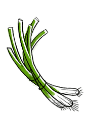

scallions
Scallions, or green onions, is a term used for multiple varieties that were harvested when young before a bulb appears. They are crisp and juicy and have a milder taste than most onions. Scallions are a source of vitamin C, calcium and vitamin A.
Scallions can be stir-fried, sauteed, roasted and grilled, but they can also be consumed raw, added as a topping on a variety of dishes. The leaves will keep up to 5 days when wrapped and stored in the refrigerator.